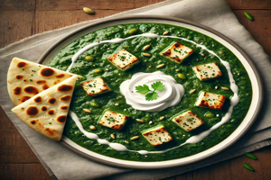

Palak Paneer Recipe

Ingredients
- 200g paneer, cubed
- 1 bunch spinach (palak), blanched and pureed
- 1 tablespoon oil
- 1 onion, finely chopped
- 1 tomato, finely chopped
- 1/2 teaspoon ginger-garlic paste
- 1/2 teaspoon cumin seeds
- 1 teaspoon garam masala
- Salt to taste
- Coriander leaves for garnish
Steps to Prepare
- Heat oil in a pan and sauté cumin seeds, onions, and ginger-garlic paste until golden.
- Add tomatoes and cook until soft.
- Add the pureed spinach and cook for 5-7 minutes.
- Stir in paneer cubes, garam masala, and salt. Simmer for 5 more minutes.
- Garnish with coriander leaves and serve hot with roti or rice.